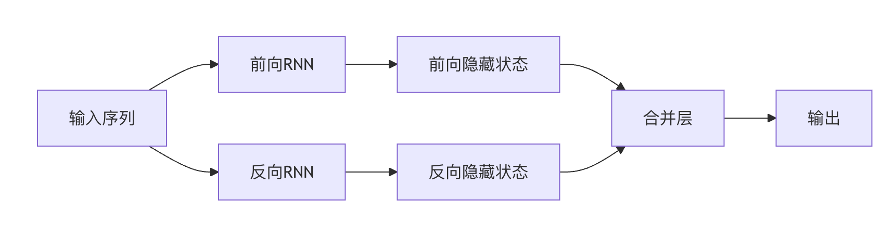

再帰型ニューラルネットワーク（RNN）
再帰型ニューラルネットワーク（Recurrent Neural Network、RNN）は、テキスト、音声、時系列などのシーケンスデータを専門に処理するニューラルネットワークです。
従来のフィードフォワードニューラルネットワークとは異なり、RNNは「記憶」能力を持ち、以前のステップの情報を保存できます。
再帰型ニューラルネットワークは、前のステップの隠れ状態（Hidden State）を利用して現在のステップの出力に影響を与え、シーケンス内の時間的依存関係を捉えます。

RNNの核心的な考え方
RNNの核心は次の点にあります再帰接続（Recurrent Connection）、つまりネットワークの出力は現在の入力だけでなく、それ以前のすべてのタイムステップの入力にも依存します。この構造により、RNNは任意の長さのシーケンスデータを処理できます。
従来のニューラルネットワーク：入力と出力は独立しています（例：画像分類では、個々の画像間に関連はありません）。
RNN：を通じて再帰接続（Recurrent Connection）により、前のステップの隠れ状態を次のステップへ渡し、「記憶」を形成します。
各ステップの入力 = 現在のデータ + 前のステップの隠れ状態。
出力は現在の入力だけでなく、それ以前のすべてのステップのコンテキストにも依存します。
人が文章を読むとき、現在の単語の理解が前に読んだ内容に依存するのと同じです（例：「彼は__を開けた」なら、「ドア」や「本」を予測するでしょう）。
実例
import numpy as np
class SimpleRNN:
def __init__(self, input_size, hidden_size):
self.Wx = np.random.randn(hidden_size, input_size) # 入力重み
self.Wh = np.random.randn(hidden_size, hidden_size) # 隠れ状態の重み
self.b = np.zeros((hidden_size, 1)) # バイアス項
def forward(self, x, h_prev):
h_next = np.tanh(np.dot(self.Wx, x) + np.dot(self.Wh, h_prev) + self.b)
return h_next
RNNの動作メカニズム
RNNは各タイムステップtで以下の計算を実行します：
- 現在の入力xₜと前の時刻の隠れ状態hₜ₋₁を受け取る
- 新しい隠れ状態hₜ = f(Wₕₕ·hₜ₋₁ + Wₓₕ·xₜ + b)を計算する
- 出力yₜ = g(Wₕᵧ·hₜ + c)を生成する
ここでfとgは通常、活性化関数（tanhやsoftmaxなど）です。
RNNの長所と短所
長所：
- 可変長シーケンスを処理できる
- 理論上は任意の長さの履歴情報を記憶できる
- パラメータ共有（同じ重みセットをすべてのタイムステップで使用）
短所：
- 勾配消失・爆発問題（長期的依存関係の学習が難しい）
- 計算効率が低い（タイムステップを並列処理できない）
長短期記憶ネットワーク（LSTM）
LSTM（Long Short-Term Memory）はRNNの改良アーキテクチャであり、標準RNNの長期的依存問題を解決するために特別に設計されています。
2.1 LSTMの核心的な構造
LSTMは3つのゲート機構と1つの記憶セルを導入しています：
| 構成要素 | 機能 |
|---|---|
| 入力ゲート | 新しい情報の流入を制御する |
| 忘却ゲート | どの古い情報を破棄するかを決定する |
| 出力ゲート | 出力する情報量を制御する |
| 記憶セル | 長期的な状態を保持する |
実例
class LSTMCell:
def __init__(self, input_size, hidden_size):
# すべてのゲートの重みを結合
self.W = np.random.randn(4*hidden_size, input_size+hidden_size)
self.b = np.random.randn(4*hidden_size, 1)
def forward(self, x, h_prev, c_prev):
combined = np.vstack((h_prev, x))
gates = np.dot(self.W, combined) + self.b
# 分割して各ゲートを取得
f_gate = sigmoid(gates[:hidden_size]) # 忘却ゲート
i_gate = sigmoid(gates[hidden_size:2*hidden_size]) # 入力ゲート
o_gate = sigmoid(gates[2*hidden_size:3*hidden_size]) # 出力ゲート
c_candidate = np.tanh(gates[3*hidden_size:]) # 候補記憶
# 記憶と隠れ状態を更新
c_next = f_gate * c_prev + i_gate * c_candidate
h_next = o_gate * np.tanh(c_next)
return h_next, c_next
LSTMはどのように長期的依存問題を解決するか
- 選択的記憶：忘却ゲートは特定の情報を保持するか破棄するかを決定できます
- 勾配経路：記憶セルは比較的直接的な勾配伝播経路を提供します
- 情報保護：記憶内容は各タイムステップの操作によって直接変更されません
ゲート付き回帰型ユニット（GRU）
GRU（Gated Recurrent Unit）はLSTMの簡略版であり、同様の性能を維持しながらパラメータ数を削減しています。
GRUの核心的な構造
GRUはLSTMの一部の構成要素を統合しています：
| 構成要素 | 機能 |
|---|---|
| 更新ゲート | 古い情報をどの程度保持するかを決定する |
| リセットゲート | 新旧情報をどのように組み合わせるかを決定する |
| 候補活性化 | リセットゲートに基づいて計算された新しい状態 |
実例
class GRUCell:
def __init__(self, input_size, hidden_size):
self.W = np.random.randn(3*hidden_size, input_size+hidden_size)
self.b = np.random.randn(3*hidden_size, 1)
def forward(self, x, h_prev):
combined = np.vstack((h_prev, x))
gates = np.dot(self.W, combined) + self.b
# ゲート信号を分割
z = sigmoid(gates[:hidden_size]) # 更新ゲート
r = sigmoid(gates[hidden_size:2*hidden_size]) # リセットゲート
h_candidate = np.tanh(np.dot(self.W[2*hidden_size:],
np.vstack((r*h_prev, x))) + self.b[2*hidden_size:]
# 隠れ状態を更新
h_next = (1-z)*h_prev + z*h_candidate
return h_next
GRU vs LSTM
| 特性 | GRU | LSTM |
|---|---|---|
| パラメータ数 | 少ない | 多い |
| 学習速度 | より速い | より遅い |
| 記憶セル | 无 | 有 |
| ゲート数 | 2つ | 3つ |
| 性能 | 小規模データセットでより良い | 大規模データセットでより良い可能性がある |
双方向RNN（Bi-RNN）
双方向RNNは、過去と未来の両方のコンテキスト情報を同時に考慮することで、シーケンスモデリング能力を強化します。
双方向RNNのアーキテクチャ
Bi-RNNは2つの独立したRNN層を含みます：
- 順方向層：時系列順にシーケンスを処理する
- 逆方向層：時系列の逆順にシーケンスを処理する
最終出力は、これら2つの方向の出力の組み合わせです（通常は連結または加算）。

双方向RNNの応用シーン
- 自然言語処理：品詞タグ付け、固有表現認識
- 音声認識：前後の文脈を利用して精度を高める
- バイオインフォマティクス：タンパク質構造予測
- 時系列予測：過去と未来の傾向を考慮する
双方向LSTM/GRU
現代のアプリケーションでは、双方向RNNは通常LSTMまたはGRUを基本ユニットとして使用します：
実例
model.add(Bidirectional(LSTM(64))) # 双方向LSTM層を作成
実践演習
演習1：簡単なRNNの実装
PythonとNumPyを使用して、文字レベルのテキスト生成を処理できる簡単なRNNを実装します。
演習2：LSTM感情分析
Kerasを使用して、LSTMベースの映画レビュー感情分類器を構築します。
演習3：双方向GRU固有表現認識
テキスト中の人名、地名などの固有表現を認識するための双方向GRUモデルを実装します。
演習4：比較実験
同じデータセット上でVanilla RNN、LSTM、GRUの性能差を比較します。
まとめと応用学習
RNNとその変種はシーケンスデータを処理する強力なツールです。さらに深く習得するには：
- RNNにおける勾配の伝播方法を理解する
- 注意力メカニズムがRNNをどのように強化するかを学ぶ
- TransformerアーキテクチャとRNNの関係を探る
- さまざまなシーケンスモデリングタスク（機械翻訳、音声合成など）を実践する
クリックしてノートを共有
ノートは本記事の内容の拡張である必要があります！
記事投稿は、ここをクリックしてください
登録招待コードの取得方法
ノートを共有する前にログインが必要です！
登録招待コードの取得方法